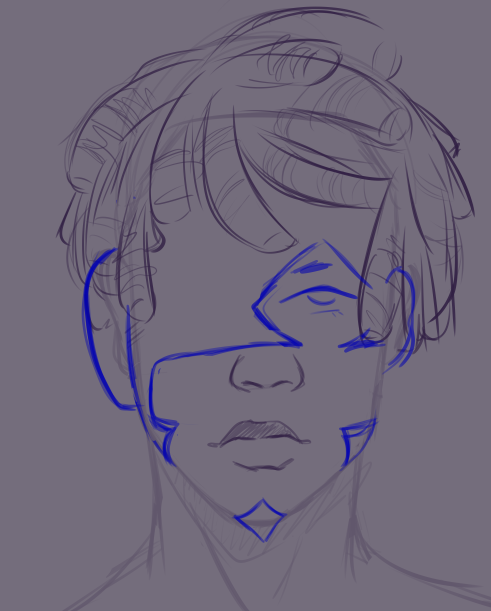

Frederick Ross:
Half-Machine Outlaw fighting a corrupt system
Who is he?
Frederick Ross hails from a future taken over by an oppressive and corrupt government. He's rebelled against the system his entire life, risking his neck every day hoping to one day make some change. What he doesn't know is that he's due for a time-hopping adventure that will finally present the opportunity he's been looking for!
What does he do?
Frederick swiftly takes down his opponents by taking hits for the team and using various explosive and energy weapons to deal heavy area damage.
Check out the artist!
The proof of concept design you see on this page was created by the lovely Chococatzu!